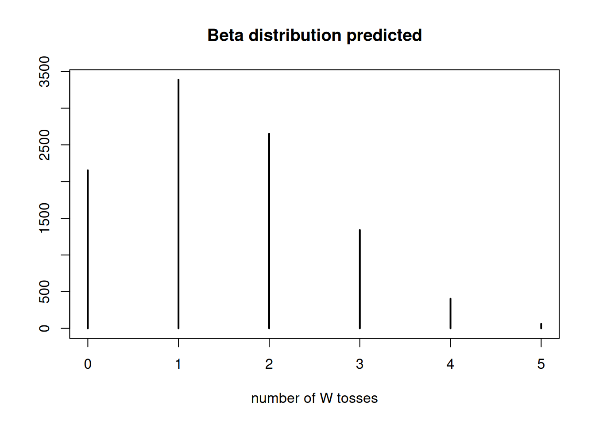

The following object is masked from 'package:stats':
filter
Loading required package: rstan
Loading required package: StanHeaders
rstan (Version 2.21.5, GitRev: 2e1f913d3ca3)
For execution on a local, multicore CPU with excess RAM we recommend calling
options(mc.cores = parallel::detectCores()).
To avoid recompilation of unchanged Stan programs, we recommend calling
rstan_options(auto_write = TRUE)
Loading required package: cmdstanr
This is cmdstanr version 0.5.3
- CmdStanR documentation and vignettes: mc-stan.org/cmdstanr
A newer version of CmdStan is available. See ?install_cmdstan() to install it.
To disable this check set option or environment variable CMDSTANR_NO_VER_CHECK=TRUE.
Loading required package: parallel
rethinking (Version 2.21)
Attaching package: 'rethinking'
The following object is masked from 'package:rstan':
stan
The following object is masked from 'package:stats':
rstudent
Loading required package: Rcpp
Loading 'brms' package (version 2.18.0). Useful instructions
can be found by typing help('brms'). A more detailed introduction
to the package is available through vignette('brms_overview').
Attaching package: 'brms'
The following objects are masked from 'package:rethinking':
LOO, stancode, WAIC
The following object is masked from 'package:rstan':
loo
The following objects are masked from 'package:ggdist':
dstudent_t, pstudent_t, qstudent_t, rstudent_t
The following object is masked from 'package:stats':
ar
Attaching package: 'tidybayes'
The following objects are masked from 'package:brms':
dstudent_t, pstudent_t, qstudent_t, rstudent_t
Attaching package: 'janitor'
The following objects are masked from 'package:stats':
chisq.test, fisher.test
# Using a finer grid with more potential possibilitiesn_possibilities<-100posterior<-compute_posterior_globe(x, n_possibilities =n_possibilities)
Question 2
Using the posterior distribution from 1, compute the posterior predictive distribution for the next 5 tosses of the same globe. I recommend you use the sampling method.
possibilities<-seq(0, 1, length.out =n_possibilities)size<-1e4n_tosses<-5# == Sampling approach from posterior# Sample with probability posterior distribution calculated in Question 1# using the grid of possibilities (sequence of numbers between 0 and 1)posterior_samples<-sample(possibilities, size =size, prob =posterior$post, replace =TRUE)# Using the posterior predicted proportion of water, simulate 5 tosses for eachposterior_predict<-rbinom(size, size =n_tosses, p =posterior_samples)# Plot number of W tosses plot(table(posterior_predict), xlab ='number of W tosses', ylab ='', main ='Posterior predicted')
# === Sampling approach from representative Beta distributionbeta_samples<-rbeta(size,n_water+1,n_land+1)# Using the beta distribution predicted proportion of water, simulate 5 tosses for eachbeta_predict<-rbinom(size, size =n_tosses, p =beta_samples)# Plot number of W tosses plot(table(beta_predict), xlab ='number of W tosses', ylab ='', main ='Beta distribution predicted')

Question 3
Use the posterior predictive distribution from 2 to calculate the probability of 3 or more water samples in the next 5 tosses.
# Predicted probability of 3 or more water samples in the next 5 tosses# given posterior predictive distributiontable(posterior_predict>=3)/size
FALSE TRUE
0.8207 0.1793
# and beta distribution predictiontable(beta_predict>=3)/size
FALSE TRUE
0.8227 0.1773
Question 4 (optional)
This problem is an optional challenge for people who are taking the course for a second or third time. Suppose you observe W = 5 water points, but you forgot to write down how many times the globe was tossed, so you don’t know the number of land points L. Assume that p = 0.7 and compute the posterior distribution of the number of tosses N. Hint: Use the binomial distribution.
p<-0.7n_water<-5n_samples<-seq(5, 15)d<-vapply(n_samples, dbinom, x =n_water, prob =p, FUN.VALUE =42)kable(data.table( n_samples =n_samples, post =d))